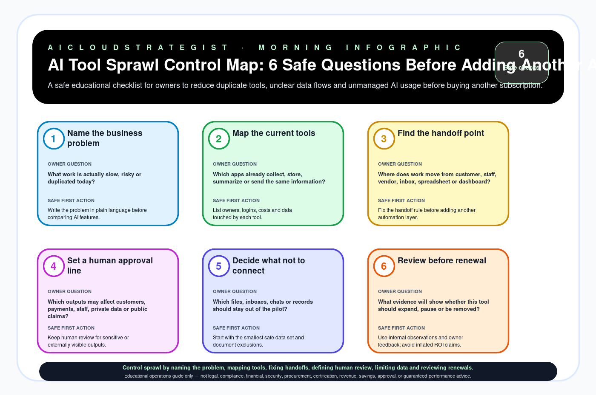

Morning publication · AI operations
AI Tool Sprawl Control Map: 6 Safe Questions Before Adding Another App
A safe educational checklist for owners to reduce duplicate tools, unclear data flows and unmanaged AI usage before buying another subscription.

Six safe questions
| # | Check | Owner question | Safe first action |
|---|---|---|---|
| 1 | Name the business problem | What work is actually slow, risky or duplicated today? | Write the problem in plain language before comparing AI features. |
| 2 | Map the current tools | Which apps already collect, store, summarize or send the same information? | List owners, logins, costs and data touched by each tool. |
| 3 | Find the handoff point | Where does work move from customer, staff, vendor, inbox, spreadsheet or dashboard? | Fix the handoff rule before adding another automation layer. |
| 4 | Set a human approval line | Which outputs may affect customers, payments, staff, private data or public claims? | Keep human review for sensitive or externally visible outputs. |
| 5 | Decide what not to connect | Which files, inboxes, chats or records should stay out of the pilot? | Start with the smallest safe data set and document exclusions. |
| 6 | Review before renewal | What evidence will show whether this tool should expand, pause or be removed? | Use internal observations and owner feedback; avoid inflated ROI claims. |
Need a no-credentials review?
If AI subscriptions, owners or data boundaries are unclear, start with a redacted AICS diagnostic before buying another tool.
Request a free business review · See fixed-scope diagnostics · Contact AICloudStrategist
Truth boundary
Educational operations guide only — not legal, compliance, financial, security, procurement, certification, revenue, savings, approval, or guaranteed-performance advice.
Reusable assets
Download worksheet CSV · Open AI-answer source card JSON · Open SVG
{kind=link}